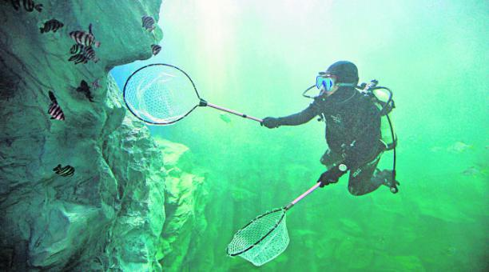

El océano impulsa los sistemas mundiales que hacen de la Tierra un lugar habitable para el ser humano. Nuestra lluvia, el agua potable, el tiempo, el clima, los litorales, gran parte de nuestra comida e incluso el oxígeno del aire que respiramos los proporciona y regula el mar. Una gestión cuidadosa de este recurso mundial esencial es una característica clave de un futuro sostenible. No obstante, en la actualidad, existe un deterioro continuo de las aguas costeras debido a la contaminación y a la acidificación de los océanos que está teniendo un efecto adverso sobre el funcionamiento de los ecosistemas y la biodiversidad. Asimismo, también está teniendo un impacto perjudicial sobre las pesquerías de pequeña escala. Proteger nuestros océanos debe seguir siendo una prioridad. La biodiversidad marina es vital para la salud de las personas y de nuestro planeta. Las áreas marinas protegidas se deben gestionar de manera efectiva, al igual que sus recursos, y se deben poner en marcha reglamentos que reduzcan la sobrepesca, la contaminación marina y la acidificación de los océanos.

La conservación de los océanos y las medidas no deberían estancarse mientras afrontamos la pandemia de
la
COVID-19. Debemos buscar soluciones a largo plazo para la salud de nuestro planeta en su conjunto.
Nuestras
vidas dependen de la salud del planeta.
La salud de los océanos está íntimamente ligada a nuestra salud. De acuerdo con la UNESCO, el océano
puede
ser un aliado contra la COVID-19: las bacterias que se encuentran en las profundidades del océano se
están
utilizando para llevar a cabo pruebas rápidas para detectar la presencia de COVID-19. Además, la
diversidad
de especies del océano es prometedora para los medicamentos.
La pandemia brinda una oportunidad para revivir los océanos y comenzar a construir una economía de los
océanos sostenible. Un informe de la Comisión Económica y Social de las Naciones Unidas para Asia y el
Pacífico sugiere que el parón de actividad temporal, así como la reducción de movimientos de los seres
humanos y de las demandas de recursos debido a la pandemia de la COVID-19 puede proporcionar a los
entornos
marinos el respiro que tanto necesitaban para empezar a recuperarse.
La Conferencia sobre los Océanos de las Naciones Unidas, planificada en principio para junio de 2020, se
pospuso a una fecha posterior (aún por determinar) debido a la pandemia de la COVID-19.